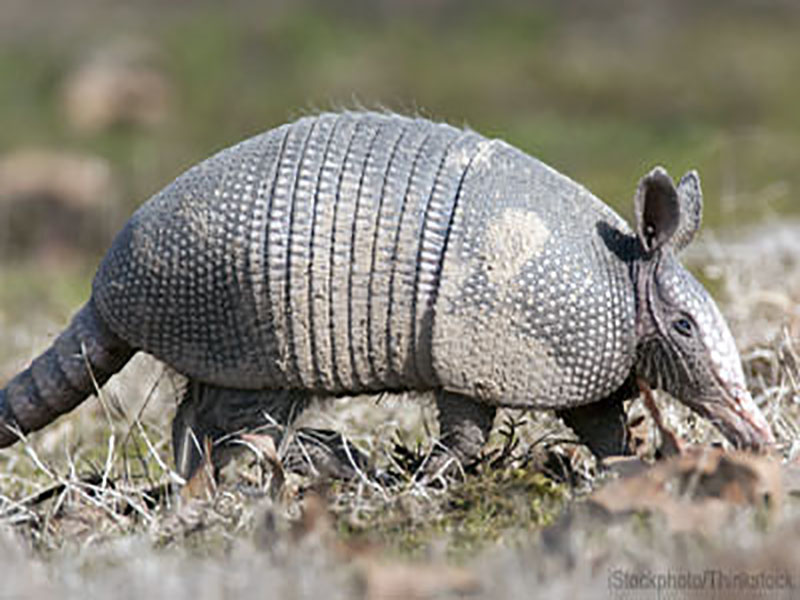
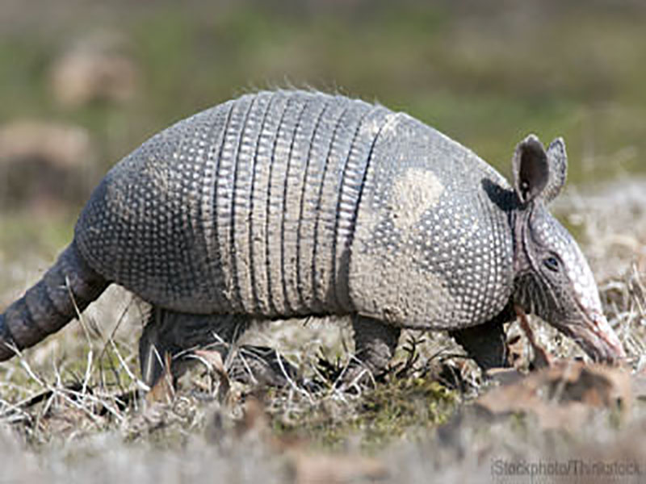
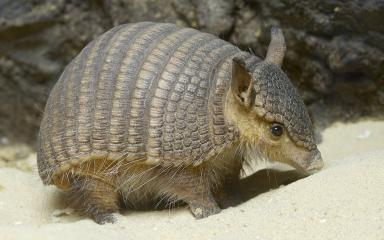
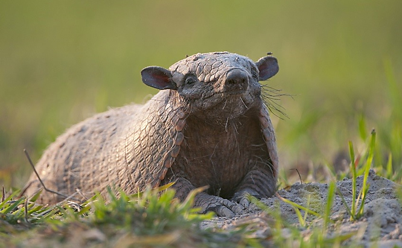

Biology
History
Armadillos originated in South America. Due to the continent's former isolation, they were confined there for most of the Cenozoic. The recent formation of the Isthmus of Panama allowed a few members of the family to migrate northward into southern North America by the early Pleistocene, as part of the Great American Interchange.
Distribution
Today, all extant armadillo species are still present in South America. They are particularly diverse in Paraguay (where 11 species exist) and surrounding areas. Many species are endangered. Some, including four species of Dasypus, are widely distributed over the Americas, whereas others, such as Yepes's mulita, are restricted to small ranges. Two species, the northern naked-tailed armadillo and nine-banded armadillo, are found in Central America; the latter has also reached the United States, primarily in the south-central states (notably Texas), but with a range that extends as far east as South Carolina and Florida, and as far north as Nebraska and central Indiana. Their range has consistently expanded in North America over the last century due to a lack of natural predators.
Types
Armadillos are small to medium-sized mammals. The smallest species, the pink fairy armadillo, is roughly chipmunk-sized at 85 g ( 3.0 oz) and 13–15 cm (5.1–5.9 in) in total length. The largest species, the giant armadillo, can be the size of a small pig and weigh up to 54 kg (119 lb), and can be 150 cm (59 in) long.
Habitat
They are prolific diggers. Many species use their sharp claws to dig for food, such as grubs, and to dig dens. The nine-banded armadillo prefers to build burrows in moist soil near the creeks, streams, and arroyos around which it lives and feeds.
Diet
The diets of different armadillo species vary, but consist mainly of insects, grubs, and other invertebrates. Some species, however, feed almost entirely on ants and termites.
Anatomy
In common with other xenarthrans, armadillos, in general, have low body temperatures of 33–36 °C (91–97 °F) and low basal metabolic rates (40–60% of that expected in placental mammals of their mass). This is particularly true of types that specialize in using termites as their primary food source.
Armadillos have very poor eyesight, and use their keen sense of smell to hunt for food. They use their claws for digging and finding food, as well as for making their homes in burrows. They dig their burrows with their claws, making only a single corridor the width of the animal's body. They have five clawed toes on their hind feet, and three to five toes with heavy digging claws on their fore feet. Armadillos have a large number of cheek teeth which are not divided into premolars and molars, but usually have no incisors or canines.
The armour is formed by plates of dermal bone covered in relatively small, overlapping epidermal scales called "scutes", composed of bone with a covering of horn. Most species have rigid shields over the shoulders and hips, with a number of bands separated by flexible skin covering the back and flanks. Additional armour covers the top of the head, the upper parts of the limbs, and the tail. The underside of the animal is never armoured, and is simply covered with soft skin and fur.
Defense
This armour-like skin appears to be the main defense of many armadillos, although most escape predators by fleeing (often into thorny patches, from which their armour protects them) or digging to safety. Only the South American three-banded armadillos (Tolypeutes) rely heavily on their armour for protection. When threatened by a predator, Tolypeutes species frequently roll up into a ball. Other armadillo species cannot roll up because they have too many plates. The North American nine-banded armadillo tends to jump straight in the air when surprised, so consequently often collides with the undercarriage or fenders of passing vehicles.
Armadillos have short legs, but can move quite quickly. The nine-banded armadillo is noted for its movement through water which is accomplished via two different methods: it can walk underwater for short distances, holding its breath for as long as six minutes; also, to cross larger bodies of water, it is capable of increasing its buoyancy by swallowing air, inflating its stomach and intestines.

Reproduction
Gestation lasts from 60 to 120 days, depending on species, although the nine-banded armadillo also exhibits delayed implantation, so the young are not typically born for eight months after mating. Most members of the genus Dasypus give birth to four monozygotic young (that is, identical quadruplets), but other species may have typical litter sizes that range from one to eight. The young are born with soft, leathery skin which hardens within a few weeks. They reach sexual maturity in three to 12 months, depending on the species. Armadillos are solitary animals that do not share their burrows with other adults.
The nine-banded armadillo serves science through its unusual reproductive system, in which four genetically identical offspring are born, the result of one original egg. Because they are always genetically identical, the group of four young provides a good subject for scientific, behavioral, or medical tests that need consistent biological and genetic makeup in the test subjects. This is the only reliable manifestation of polyembryony in the class Mammalia, and exists only within the genus Dasypus and not in all armadillos, as is commonly believed.